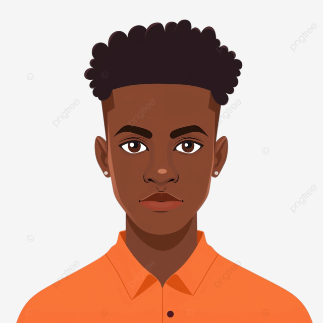
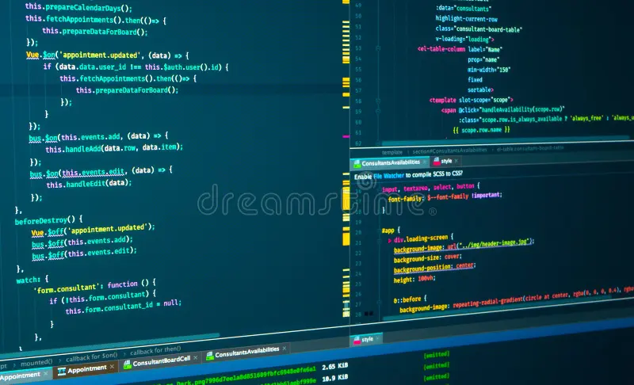
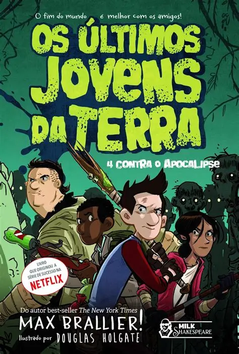

Matheus
Resumo

Olá! Meu nome é Matheus, tenho 17 anos e moro em Candeias, na Bahia. Sou estudante e gosto de aprender coisas novas, conhecer histórias interessantes e aproveitar meu tempo com atividades de que gosto. Acredito que cada dia é uma oportunidade de aprender e melhorar.
Formação
.webp)
Estudo na Escola SESI Candeias, onde desenvolvo meus conhecimentos e habilidades. Minha trajetória escolar é importante para meu crescimento pessoal e para preparar meu futuro profissional.
Projetos
Projeto 1 - Atividade escolar
Este espaço apresenta uma atividade desenvolvida na escola, colocando em prática os conhecimentos aprendidos em sala de aula.
Projeto 2 - Criação de site em HTML

Neste projeto, estou aprendendo a criar páginas usando HTML, organizando textos, imagens, links e seções.
Projeto 3 - Projeto criativo
Este projeto representa a oportunidade de usar minha criatividade, desenvolver ideias e aprender novas maneiras de resolver problemas.
Hobbies
- Ler histórias e livros.
- Assistir a filmes e séries.
- Conhecer personagens e universos fictícios.
- Acompanhar futebol e torcer pelo Bahia.
Referências
Filme: Homem-Aranha
Homem-Aranha é um personagem conhecido por suas aventuras, seus poderes e sua responsabilidade em proteger as pessoas. Gosto desse universo por causa da ação, das histórias e dos desafios enfrentados pelo personagem.
Livro: Os Últimos Jovens da Terra

Os Últimos Jovens da Terra é uma série de livros de aventura que acompanha jovens enfrentando um mundo cheio de monstros e desafios. A história mistura ação, humor e amizade.
Livro: Vivendo, Avançando
Escolhi essa referência por seu título, que transmite a ideia de seguir em frente e continuar evoluindo. Aqui você pode acrescentar uma explicação sobre a história e o que mais gosta nessa obra.